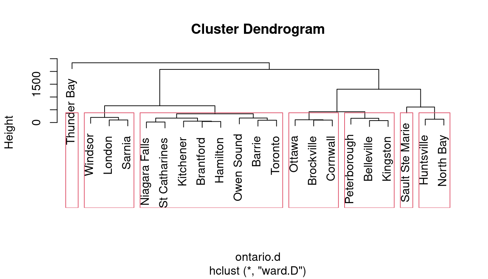

library(tmaptools)
library(leaflet)
library(tidyverse)
library(conflicted)
conflicts_prefer(dplyr::mutate)
conflicts_prefer(dplyr::arrange)Drawing maps with R
Making maps in R
- Spatial data comes with locations (perhaps with information about those locations).
- A good way to draw spatial data is on a map.
- The leaflet package is the easiest way to draw maps in R.
- Install these two packages, with two familiar ones:
Hockey league map
The Ontario hockey divisions (the last example for cluster analysis) came with a very bad map. Can we do better?
- reload the Ontario road distances
my_url <-
"http://ritsokiguess.site/datafiles/ontario-road-distances.csv"
# my_url <- "ontario-road-distances.csv"
ontario <- read_csv(my_url)Rows: 21 Columns: 22
── Column specification ────────────────────────────────────────────────────────
Delimiter: ","
chr (1): place
dbl (21): Barrie, Belleville, Brantford, Brockville, Cornwall, Hamilton, Hun...
ℹ Use `spec()` to retrieve the full column specification for this data.
ℹ Specify the column types or set `show_col_types = FALSE` to quiet this message.Ontario road distances (some)
ontario# A tibble: 21 × 22
place Barrie Belleville Brantford Brockville Cornwall Hamilton
<chr> <dbl> <dbl> <dbl> <dbl> <dbl> <dbl>
1 Barrie 0 260 190 405 500 145
2 Belleville 260 0 290 155 250 255
3 Brantford 190 290 0 420 535 40
4 Brockville 405 155 420 0 95 405
5 Cornwall 500 250 535 95 0 500
6 Hamilton 145 255 40 405 500 0
7 Huntsville 125 280 300 405 450 270
8 Kingston 330 75 340 80 180 330
9 Kitchener 180 280 40 425 520 60
10 London 260 360 85 510 605 125
# ℹ 11 more rows
# ℹ 15 more variables: Huntsville <dbl>, Kingston <dbl>,
# Kitchener <dbl>, London <dbl>, `Niagara Falls` <dbl>,
# `North Bay` <dbl>, Ottawa <dbl>, `Owen Sound` <dbl>,
# Peterborough <dbl>, Sarnia <dbl>, `Sault Ste Marie` <dbl>,
# `St Catharines` <dbl>, `Thunder Bay` <dbl>, Toronto <dbl>,
# Windsor <dbl>Grab the places
- and append province (“ON”) for reasons shortly to become clear:
tibble(place = ontario$place) %>%
mutate(prov = "ON") %>%
unite(place1, c(place, prov), sep = " ") -> ontario2
ontario2# A tibble: 21 × 1
place1
<chr>
1 Barrie ON
2 Belleville ON
3 Brantford ON
4 Brockville ON
5 Cornwall ON
6 Hamilton ON
7 Huntsville ON
8 Kingston ON
9 Kitchener ON
10 London ON
# ℹ 11 more rowsGeocode 1/2
- find their latitudes and longitudes (“geocode”; slow).
- Save the geocoded places.
ontario2 %>%
rowwise() %>%
mutate(ll = list(geocode_OSM(place1))) -> dd# A tibble: 21 × 2
# Rowwise:
place1 ll
<chr> <list>
1 Barrie ON <named list [3]>
2 Belleville ON <named list [3]>
3 Brantford ON <named list [3]>
4 Brockville ON <named list [3]>
5 Cornwall ON <named list [3]>
6 Hamilton ON <named list [3]>
7 Huntsville ON <named list [3]>
8 Kingston ON <named list [3]>
9 Kitchener ON <named list [3]>
10 London ON <named list [3]>
# ℹ 11 more rowsGeocode 2/2
Untangle the lats and longs:
d %>%
unnest_wider(ll) %>%
unnest_wider(coords) -> ontario3
ontario3# A tibble: 21 × 5
place1 query x y bbox
<chr> <chr> <dbl> <dbl> <list>
1 Barrie ON Barrie ON -79.7 44.4 <bbox [4]>
2 Belleville ON Belleville ON -77.4 44.2 <bbox [4]>
3 Brantford ON Brantford ON -80.3 43.1 <bbox [4]>
4 Brockville ON Brockville ON -75.7 44.6 <bbox [4]>
5 Cornwall ON Cornwall ON -74.7 45.0 <bbox [4]>
6 Hamilton ON Hamilton ON -79.9 43.3 <bbox [4]>
7 Huntsville ON Huntsville ON -79.2 45.3 <bbox [4]>
8 Kingston ON Kingston ON -76.5 44.2 <bbox [4]>
9 Kitchener ON Kitchener ON -80.5 43.5 <bbox [4]>
10 London ON London ON -81.2 43.0 <bbox [4]>
# ℹ 11 more rowsMake map
- finally:
leaflet(data = ontario3) %>%
addTiles() %>%
addCircleMarkers(lng = ~x, lat = ~y) Cluster analysis revisited
ontario %>% select(-1) %>% as.dist() -> ontario.d
ontario.hc <- hclust(ontario.d, method = "ward.D")Seven clusters:
plot(ontario.hc)
rect.hclust(ontario.hc, 7)
Get the clusters
tibble(place = ontario$place, cluster = cutree(ontario.hc, 7)) -> clusters
clusters %>% arrange(cluster)# A tibble: 21 × 2
place cluster
<chr> <int>
1 Barrie 1
2 Brantford 1
3 Hamilton 1
4 Kitchener 1
5 Niagara Falls 1
6 Owen Sound 1
7 St Catharines 1
8 Toronto 1
9 Belleville 2
10 Kingston 2
# ℹ 11 more rowsCombine clusters
- combine clusters 6 and 7 with 4 (“north”)
- combine clusters 2 and 3 (“east”)
- make named divisions
clusters %>%
mutate(division = fct_collapse(factor(cluster),
"north" = c("4", "6", "7"),
"east" = c("2", "3"),
"west" = "5",
"central" = "1")) %>%
arrange(division) -> divisionsThe divisions
divisions# A tibble: 21 × 3
place cluster division
<chr> <int> <fct>
1 Barrie 1 central
2 Brantford 1 central
3 Hamilton 1 central
4 Kitchener 1 central
5 Niagara Falls 1 central
6 Owen Sound 1 central
7 St Catharines 1 central
8 Toronto 1 central
9 Belleville 2 east
10 Brockville 3 east
# ℹ 11 more rowsTake “ON” off of ontario3
ontario3 %>%
mutate(place = str_replace(place1, " ON$", "")) -> ontario3
ontario3# A tibble: 21 × 6
place1 query x y bbox place
<chr> <chr> <dbl> <dbl> <list> <chr>
1 Barrie ON Barrie ON -79.7 44.4 <bbox [4]> Barrie
2 Belleville ON Belleville ON -77.4 44.2 <bbox [4]> Belleville
3 Brantford ON Brantford ON -80.3 43.1 <bbox [4]> Brantford
4 Brockville ON Brockville ON -75.7 44.6 <bbox [4]> Brockville
5 Cornwall ON Cornwall ON -74.7 45.0 <bbox [4]> Cornwall
6 Hamilton ON Hamilton ON -79.9 43.3 <bbox [4]> Hamilton
7 Huntsville ON Huntsville ON -79.2 45.3 <bbox [4]> Huntsville
8 Kingston ON Kingston ON -76.5 44.2 <bbox [4]> Kingston
9 Kitchener ON Kitchener ON -80.5 43.5 <bbox [4]> Kitchener
10 London ON London ON -81.2 43.0 <bbox [4]> London
# ℹ 11 more rowsAdd the divisions, matching by place
- and draw map
pal <- colorFactor("Set1", divisions$division)
ontario3 %>% left_join(divisions) %>%
select(place, x, y, division) %>%
leaflet() %>%
addTiles() %>%
addCircleMarkers(lng = ~x, lat = ~y,
color = ~pal(division)) Joining with `by = join_by(place)`Original seven clusters
The same idea gets a map of the original seven clusters:
pal <- colorFactor("Set1", divisions$cluster)
ontario3 %>% left_join(divisions) %>%
select(place, x, y, cluster) %>%
leaflet() %>%
addTiles() %>%
addCircleMarkers(lng = ~x, lat = ~y,
color = ~pal(cluster))Joining with `by = join_by(place)`